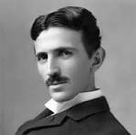

About Nikola Tesla
Nikola Tesla was a Serbian-American inventor, electrical engineer, mechanical engineer, and futurist best known for his contributions to the design of the modern alternating current (AC) electricity supply system.
He was born on July 10, 1856, in Smiljan, Croatia, which was then part of the Austrian Empire. Tesla's inventions and discoveries laid the groundwork for many of the technologies we use today, including wireless communication, radio, and remote control.
Timeline of Highlights
- 1884: Arrived in the United States.
- 1887: AC Induction Motor and the Tesla Coil.
- 1891: Developed the Tesla Coil.
- 1893: Demonstrated wireless energy transfer.
- 1896: Opened his own laboratory in New York City.
- 1899: Colorado Springs experiments.
- 1900s: Worked on wireless transmission of power and communication.
- 1943: Passed away on January 7 in New York City.
Quotes by Nikola Tesla
"The present is theirs; the future, for which I really worked, is mine."
"The scientists of today think deeply instead of clearly. One must be sane to think clearly, but one can think deeply and be quite insane."